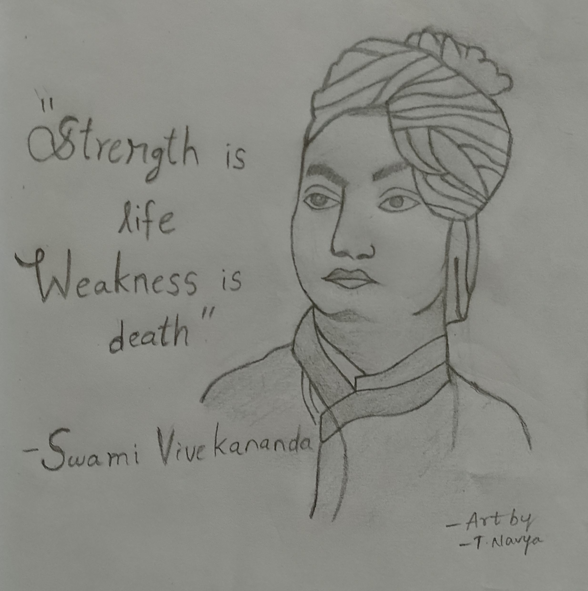

VIVEKANANDA
"Arise, awake, and stop not till the goal is reached."
This is one incident happened in Swami Vivekananda life...... Swami Vivekananda attended a meeting in another country Among those present, a girl listened to swami Vivekananda's speech and impressed. The girl went to Swami Vivekananda and said, "I love you, shall we get married? I wish i could give birth to a boy like you. says that. Swami vivekananda told no i don't get married. If you want boy like me treat me like your son.